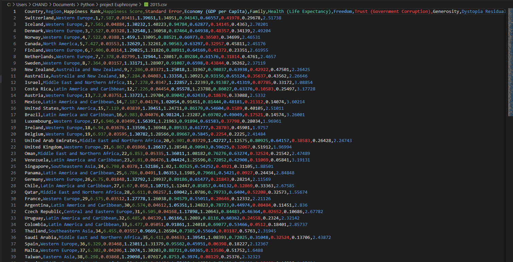
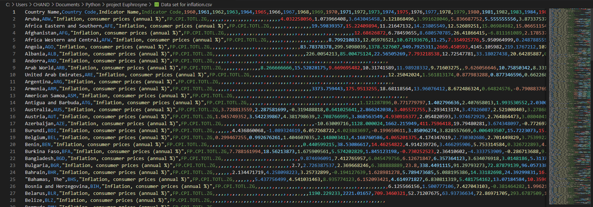
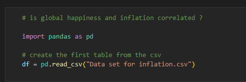
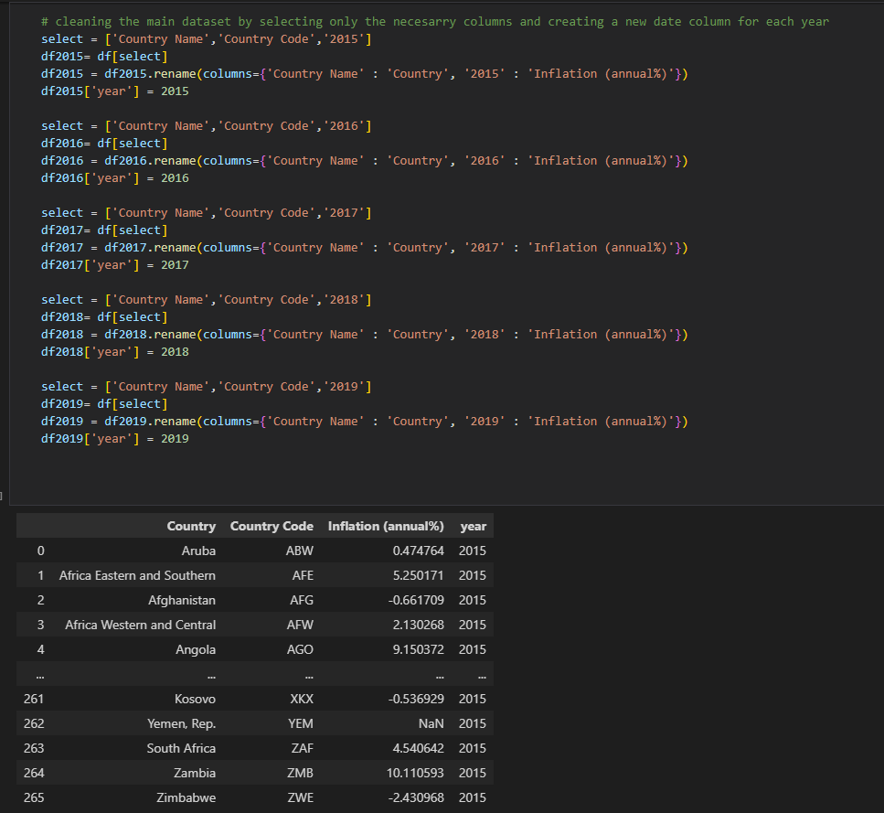
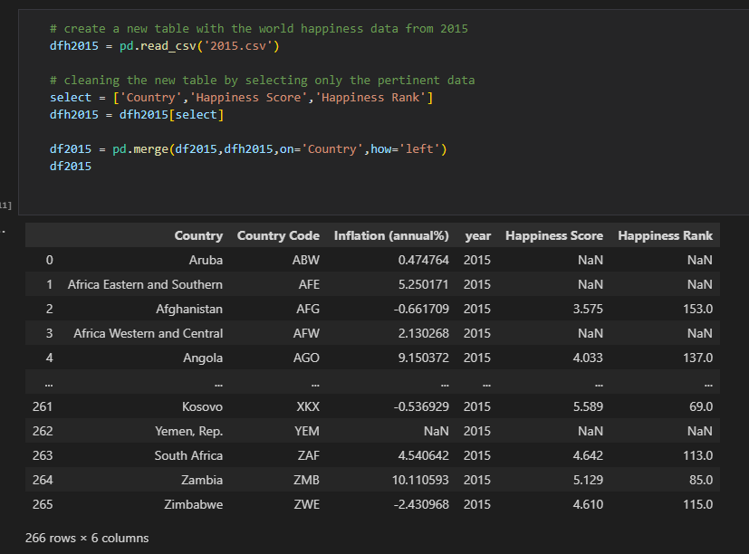
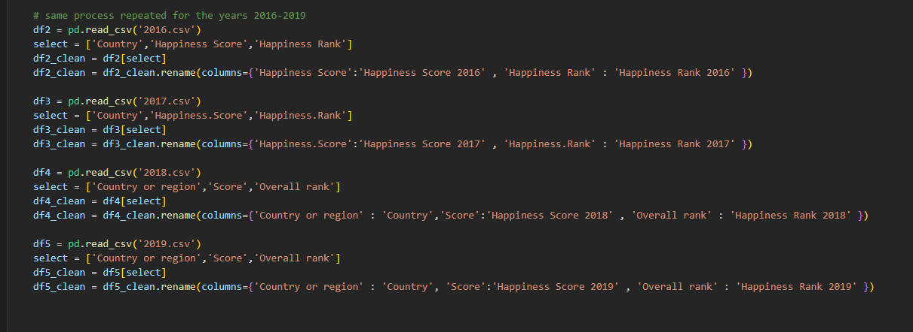
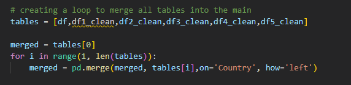
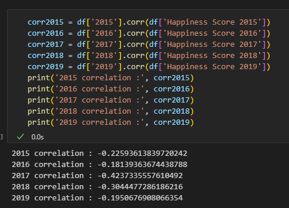
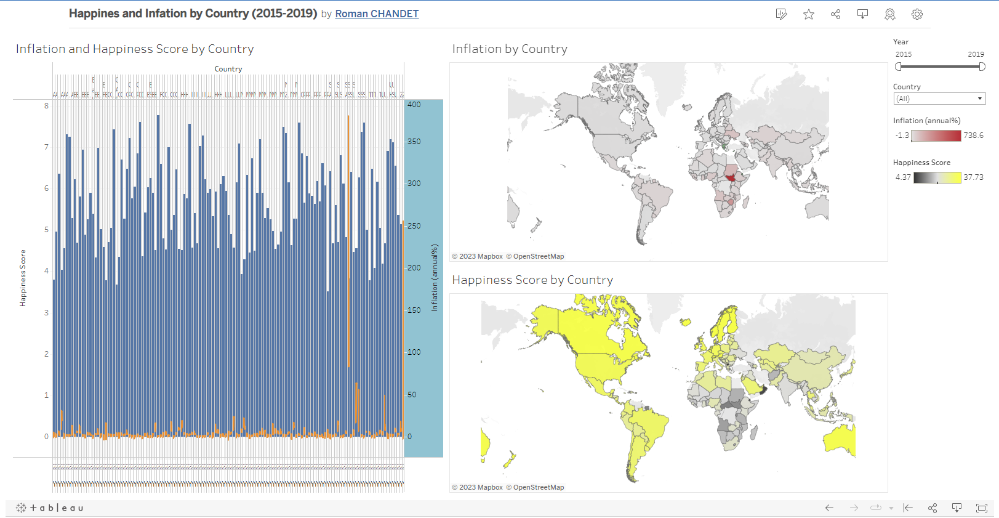
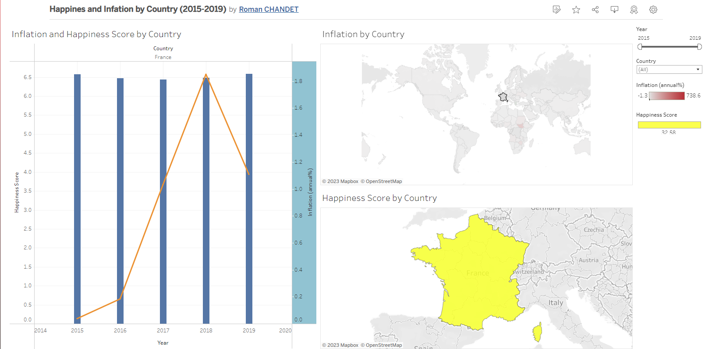

Project Euphrosyne
"A question of Happiness"
Introduction
Inflation is a common economic phenomenon that affects people's lives in numerous ways. It has been linked to changes in the cost of living, purchasing power, and employment rates. At the same time, happiness is a crucial indicator of human well-being and is affected by various socio-economic factors. In this data analysis project, we aim to explore the relationship between inflation and happiness levels across different countries over time. By analyzing inflation data from various sources and comparing it with happiness metrics, we hope to gain insights into the impact of inflation on people's well-being. This analysis may shed light on the role of economic stability in promoting happiness and provide policymakers with valuable information for designing effective economic policies.
The Inflation and Happiness data sets were pulled directly from publicly available Kaggle data sets.
Here is a preview of the Happiness Data CSV for the year 2015:
And here is a preview of the inflation data set:
Data Cleaning
Before any cleaning can be done we must first procced with an inital analysis of the base data sets to better understand what each columns represents and what data available we have. Once that is done we can select only the pertinent data for this analysis. This helps too reduce the costs of data treatment and helps to focus on the important information.
Here I will run you through my Python code that I used for this data cleaning:
 Once we have selected the pertinent columns in each data set we will merge them all into a single table. This requires more cleaning to make sure all columns have the correct naming to be able to identify a primary key for merging:
  Now that we have all the data in a single table we can export this data into a new CSV file:
And here is what this new clean data looks like:
Analysis
From this cleaned data we can now procceed to some inital analysis in Python:
A correlation result is a numerical value between -1 and 1 : 1 being correltated, -1 being opposite and 0 being unrelated. From these results we can already see that this inflation and happiness data seem to not be very correlated as all results are near 0.
A good practice is to never jump to conclusions and to analyse data visualy. So from this same data set we will build a dashboard to verify this first result.
Here is a global view of our dashboard:
On the left side we have a bar vs line graph that shows us both the evolution of inflation % and happiness score by year. On the right we have 2 maps the show us the inflation and happiness data by country. Now the left graph is unreadable because of the quantity of information but it was made to adapt the user selected filter of country.
Here is the same dashboard with a single country selected:
In this view we can better understand the first graph. The point of this dashboard here is to be able to quickly identify countries with high inflation or high happiness scores and compare them.
And here is the dashboard for you to use freely:

Conclusion
From the data that was available to us we cannot conclude any direct correlation between inflation and happiness. Yet this does not necessarily mean that inflation and happiness are not correlated, this just shows us the limits of the data that we had available here. Maybe the sample size of years was not enough. More factors can be closely examined in future research to gain a better understanding of the complex relationship between economics and human well-being. By identifying the key drivers of happiness, policymakers can design more effective strategies for promoting economic growth and improving the overall quality of life for their citizens.